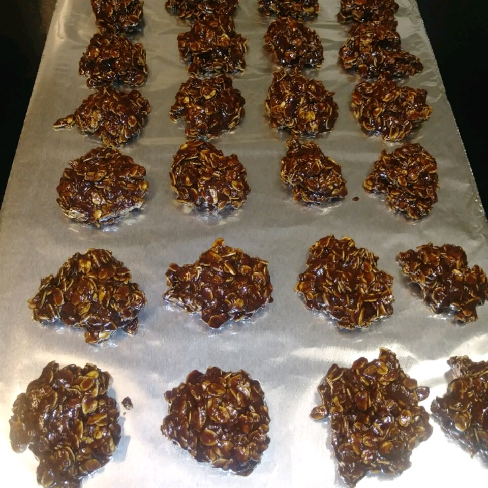

Healthier No-bake Oatmeal Cookies

Description
A healthier way to enjoy one of America's favorite cookies! To make this vegetarian, use a milk substitute (i.e. almond milk or coconut milk).
Prep: 10 mins
Drop oats mixture by spoonful onto waxed paper. Cool completely before removing from paper, at least 20 minutes.
Ingredients
- 1 ⅔ cups white sugar
- ½ cup milk
- ½ cup cocoa powder
- ⅛ teaspoon salt
- ½ cup peanut butter
- 5 tablespoons applesauce
- 1 teaspoon vanilla extract
- 3 cups rolled oats
Steps
- Mix sugar, milk, and cocoa powder together in a saucepan; bring to a boil and cook at a boil for 1 minute. Remove saucepan from heat and stir peanut butter, applesauce, and vanilla extract into the hot mixture until smooth. Add oats and stir until evenly mixed.
- Drop oats mixture by spoonful onto waxed paper. Cool completely before removing from paper, at least 20 minutes.
Home